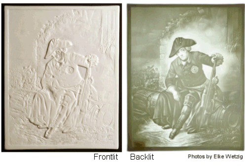
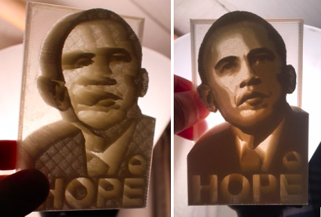

3D Printing Change: Sense-making Methods
"A once-shuttered warehouse is now a state-of-the art lab where new workers are mastering the 3D printing that has the potential to revolutionize the way we make almost everything."
Barack Obama, State of the Union, 2013
Recent advances in 3D printing position the technology as a unique point of access/ability: increasingly more people have access to 3D technologies and increasingly 3D technologies are being used to create accessible experiences for different people. Beginning with rapid prototyping in the late 1980s and then additive manufacturing in the 1990s, 3D printing has moved from the industrial to the individual through the popularity of maker movements. The maker movement refers to a tech-influenced DIY community that began to emerge in the mid 2000s. The invention of affordable, easily hackable technology and open source software instigated a new type of DIY citizenship built from the hybrid economy of material, conceptual, and digital production. Makerspaces or fabrication labs (FabLabs) often participate in education initiatives to encourage individuals to “make stuff” and provide open access to lab equipment and tutorials for 3D technologies. Collecting in makerspaces or through online forums, the maker movement’s drive to tinker with new technologies and the growing culture of computing has generated grassroots innovation and influenced market demand. By encouraging people to tinker with technology, maker culture has not only brought updates and innovation to the market, but also dramatically lowered the cost of making technologies. Personal 3D printers that were around $10,000 in 2007 are now under $300 (Amazon.com). In conjunction, open source software such as 123Dcatch, Tinkercad, Meshmixer, Sketchfab, and Thingiverse offer free online platforms for making, remixing, and sharing 3D models. Schools, libraries, and public institutions are also using 3D technologies to expand educational outreach and provide increased access to visual data. Unveiled in 2013, for instance, the Smithsonian X 3D Explorer lets users rotate, zoom in, and engage with 3D models of some of the most iconic artifacts in the museum - from fossils and flowers to the Wright brothers plane and presidential busts (https://3d.si.edu). Visitors to the site can also download and print the digital data in material form, enabling a new type of study and hands on learning. Due to such advances, 3D technologies have become a viable arena for taking advantage of the flexibility and accessibility of digital images, enabling multiple ways of seeing and experiencing, and opening up new ways of doing digital visual study.
Video 1: Description of 3D printing and common uses
Using the Obama Hope image, this project demonstrates how 3D technologies and a critical making approach can generate embodied, multisensory ways of doing digital visual study. My critical making process began with the question “How can I make a version of Obama Hope that designs for lived experiences and encourages different, more tactile ways of seeing?” As a person with 20/30 vision, my lived experience of visual data is similar to some, different than others. But my specific goal with this sense-making experiment was to reframe what (and how) we see, to disrupt normative experiences of visual imagery, and translate questions about accessibility into material forms. As previously discussed, prioritizing lived experience opens up possibilities for new, alternative ways of seeing and knowing. In 3D printing Obama Hope, I am not trying to make an accessible version that accommodates bodily difference. Instead, my designs create different, multisensory experiences of the visual data that reframes how people encounter the image.
In order to generate multisensory experiences, I tinkered with different tools and technologies to redesign Obama Hope and create a texture and topography that is both seen and felt. I first experimented with materials and form (plastics, wood, paper, metal) to see how changing variables changed the experience of Obama Hope. Playing with materials and remaking Obama Hope’s visual data helped me understand how light, color, and shape create visual markers that can be translated into tactile experiences. Ultimately, I decided to create a 3D printed lithophane to reframe how we experience the image and challenge normative ways of seeing. Historically, artists created lithophanes in thin porcelain and etched an image that can only be seen clearly when lit from behind (See Figure below).
Figure 7: Traditional porcelain lithophane (Image Licensed under CC).
The thinner areas let in more light while thicker portions create a contrast and appear darker. The monochromatic contrast conveys depth and perspective to create a full image (Carney). Carved into porcelain, a lithophane also has a distinct topography that transforms a traditional visual form into a multisensory experience. To see the image, a lithophane must be picked up, repositioned, and angled toward a light. As such, lithophanes engender tactile experiences as part of the looking process.
To create a 3D printed tactile experience, a designer must consider how light plays a role in images, how to best represent visual markers, and how digital technologies affect design and composition. Similar to how sound wave visualizations help us “see” sound, 3D lithophanes can help us make objects that allow people to touch light and dark. First, I had to reconfigure Obama Hope’s iconic colors, outline, and shading to fit the monochromatic lithophane look and 3D printing process. Traditional porcelain lithophanes carve out materials in a subtractive process, but 3D printing is an additive process that creates layers. Re-vising texture and light in 3D printing translates to building up some areas of a print with multiple layers to create height, while leaving other areas low and thin. Building height in a 3D object is called extruding, pulling part of a model up or out. Like traditional lithophanes, the thin areas let in light, while the thicker (extruded) areas create a dark contrast. When lit from behind, the different layers of the 3D printed lithophane create contrast and show the contours of the Obama Hope image. However, when you shift the perspective and look at the lithophanes from the side, the juxtaposition of thick and thin layers resembles a mountain range of hills and valleys that you can both see and touch.
Figure 8: Image of Obama Hope Lithophane from the side and front, both lit from behind.
Several websites offer free 3D print lithophane generators that allow users to alter models, so the process of making becomes accessible, tinker-centric, and community based. To create my 3D printed lithophane, I used http://3dp.rocks/lithophane/, a program that transforms flat photos into lithophanes that can be downloaded and printed. I adapted both the original photo by Mannie Garcia as well as the Shepard Fairey’s Obama Hope design, and made four Obama lithophanes with a public access university printer and common 3D printing plastic.4 I (critically) made multiple versions for two reasons. First, I needed to learn more about how the materiality of an image shapes its visual form, including how computers process visuals to create depth, contour, and other aspects that indicate a three-dimensional object. Second, I wanted to experiment with how different versions would encourage different sense-making experiences. With each version, I altered variables to discover how factors like contrast, extrusion, or composition changed the sensory experience of the resulting 3D object. Since my goal was to create different sensory experiences of the Obama Hope image, I tinkered with the height of each lithophane and exaggerated visual elements so that the iconic color and shading of the Obama images could be felt in the printed peaks and valleys and encourage tactile ways of looking.
Video 2: Example lithophanes of Obama portrait and Obama Hope showing how to tinker with tactility
When I show people my 3D version of Obama Hope, the first question asked is, “how should I look at it?” quickly followed by “can I touch it?” In “looking,” people experience the lithophanes quite differently, with some focusing on how to make sense of the print, others testing the spiky peaks, and others asking about how I made the image. To make sense of Obama Hope3D, people pick up the lithophanes, hold the print sideways to study the peaks and valleys, and finally move around to catch the light. Only when people handle the print and hold it up to light can they see Obama Hope and all the details and dimensions that go into creating the visual. However, even when not lit from behind, the lithophane still leaves an imprint, a topography that individuals can see and touch. In this way, the extreme variations created in the 3D print challenge people to use multiple senses to make sense of the visual data while calling into question a normative view.
3D prints such as Obama Hope also draw attention to the making process, which illuminates the process of vision itself. People ask, “How did you make this?” and question how the 3D process transformed the visual data without distorting the image. They specifically want to know how I transformed visual aspects such as Obama’s skin and hairline and Fairey’s shading and graphics into tactile structures that look so different from the original yet remain recognizable. Such inquiries are exactly what critical making hopes to generate, as it is through such discussions about process that we come to better understand not only the images at hand, but also the sense making act of vision itself.
The making of 3D printed versions of Obama Hope, for instance, helps articulate many of the details and dimensions of visual data that often go unnoticed, the details that can help highlight the unique assemblages of distinct versions. As a flat image, Obama Hope presents one version of visual data - the bold colors, smoothed out facial features, and outlined forms, etc. However, as a 3D print, Obama Hope reveals more of the unique features - the structure and shadows, the heights and depths that are encoded in visual data to make up the image, features that make each version different. Similar to an MRI or even a microscope, making with 3D print technologies creates a different experience of the visual data that goes beyond surface level analysis and enables artists, scholars, and perhaps even lawyers to understand Obama Hope in a new way. For example, when Shepard Fairey released Obama Hope, the Associated Press claimed copyright infringement and criticized Fairey for altering Mannie Garcia’s original photo of President Obama without obtaining their permission. In turn, Fairey claimed fair use and argued that “he had effectively transformed the work into an idealized image ‘that created powerful new meaning and conveys a radically different message’” (New York Times, Dunlap 2011). The legal battle went on for years and scrutinized concepts of remix, artistic interpretation and especially fair use. Transforming the Obama Hope image into a 3D model illustrates how Fairey’s version is distinct from Garcia’s photo. When 3D printed, Garcia’s photo results in numerous peaks and valleys, each rising and falling to mimic the proportions of President Obama’s face, his hairline, and even the tone and texture of his skin. However, in Obama Hope, the 3D print reveals more of a block outline, a result of Fairey’s shading, color use, and remix of the image to create a different, graphic version. By approaching the visual data as a tactile experience, one can more clearly see and feel the difference between the two images. Ironically, by remaking the image into a different, multisensory experience, we can see how Obama Hope is an original creation, perhaps inspired by Garcia’s photo, but distinct in composition and style. Perhaps, if the lawyers had approached the image as a multisensory experience, everyone could have avoided such a lengthy debate and instead reconsidered how we define fair use. But even more importantly, by approaching visional data as an embodied experience and decentering normative ways of seeing, we can shift the conversation from defending originality to celebrating difference.
Making a 3D Obama Hope into a multisensory experience also emphasizes new types of access and accessibility created by the flexibility of digital images. Technologies already augment the way that we see images and objects, from reading glasses to photocopy machines. However, as Sean Zadnek points out, electronic texts are extremely powerful as “presentation neutral,” which means they can be altered and rendered to best fit individual lived experiences (7). Digital technologies open up new multisensory ways of engaging digital images, ways that celebrate difference in their ability to transform “visually, auditorily, tactilely, or any other combination” according to the sensory needs of diverse users (World Wide Web Consortium, 2016). For example, technologies such as screen readers can speak text, voice inputs can create braille displays, texts can be enlarged, and touch based screens create new types of interactions with digital data that traditional images, audio, and video lack.5 Similarly, 3D printing technologies enable users to transform a flat image such as Obama Hope into a 3D model that create multiple ways to interact with the image - zooming, rotating, sculpting, touching etc. However, 3D print technologies not only diversify experiences of digital images but also diversify making practices for users with different communication abilities. 3D modeling software and printing programs are partnering with communities to create multisensory platforms that use Braillers or auditory commands to interact with visual data. For instance, OpenSCAD uses auditory commands to create 3D models and Yahoo Japan recently created a voice activated 3D printer that helps translate text descriptions into printed artifacts. A new “hands on search” function even responds to auditory printing requests, physically producing an elephant or toy car on demand (http://award.aid-dcc.com/yahoo/en/). Such 3D printing innovations challenge visual studies to account for the multiple ways that digital technologies already transform visual images into sense-making experiences.
Perhaps most importantly, critical making Obama Hope helps demonstrate the multiplicity of visual experience and account for the dynamic ecologies that come to constitute vision itself. The Obama Hope 3D, for instance, creates an experience for both maker and audience that reframes how visual images can engender multisensory experiences and draws attention to the dynamic ecology of vision. While we normally think of vision as a bodily experience, local to our eyes and biological systems, our body is only one factor in the ecology of what constitutes how and what we see. Technologies shape our exposure to images and factors such as light and form constantly change and affect visual experiences. For example, if I walk into a dark room with 100 people, none of us can see, regardless of the strength of our eyes or sensory abilities. The tactile experience of Obama Hope accentuates light and form and challenges us to think outside of our bodies and to consider the multiple material, environmental facets also at play within visual experiences. When we invite people to approach an image from a different perspective, one that accounts for multiple senses and environmental factors, they have to look differently, see differently, and think about vision differently. When we decenter bodies in general and re engage vision from alternative practices, we also reframe visual study to better account for accessibility - thinking about how different bodies and dynamic ecologies of people, technology, and senses work together to see, study, and understand visual data.
4. Specifically, I used a Fusion 3 printer and Makeshaper PLA filament (1.75 mm) in “Natural)↩